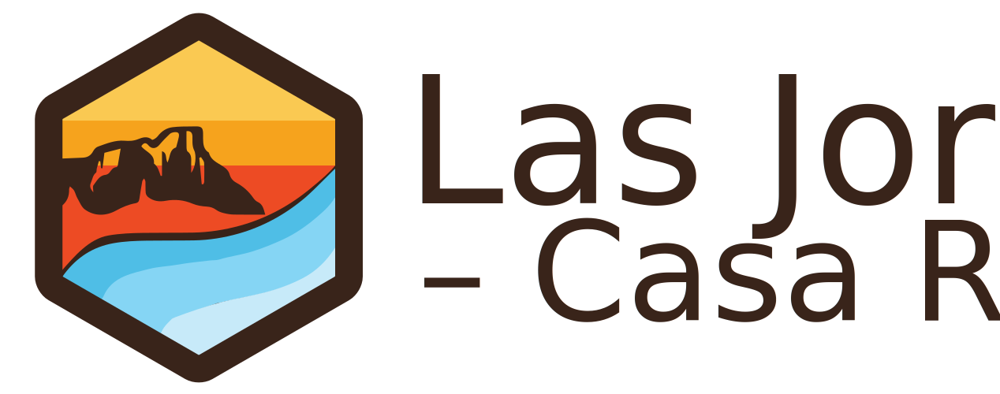

Programación JavaScript (3 puntos):
Programación CSS (1 punto):
Creación, estructuración y diseño de una nueva página web para la casa rural Las Jordanas (Murcia), a partir del contenido de la ya existente y mostrada a continuación. Trabajo realizado de manera colectiva haciendo uso de Github, y cuyo repositorio puede visitarse en:
Asimismo, diseño de un imagotipo para la casa rural:
La nueva página web de la casa rural, totalmente funcional y optimizada respecto a su versión anterior, puede visualizarse a continuación: